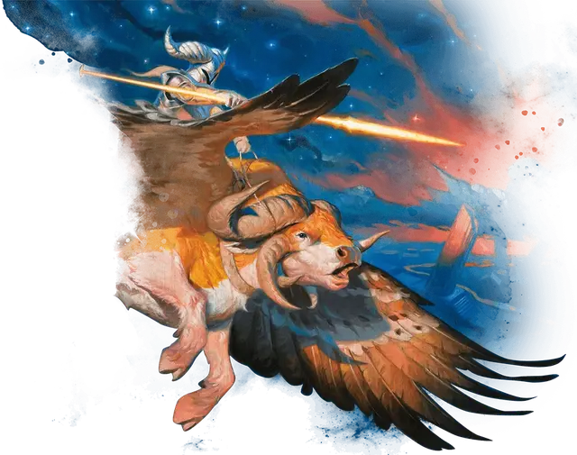

Архонт падающих звёзд
Archon of Falling Stars
Средний Небожитель, законно-добрый

Класс Доспеха 18 (латы)
Хиты 144 (17к8 + 68)
Скорость 30 футов
| мод | спас | ||
|---|---|---|---|
| СИЛ | 20 | +5 | +9 |
| ЛОВ | 15 | +2 | +2 |
| ТЕЛ | 19 | +4 | +8 |
| мод | спас | ||
|---|---|---|---|
| ИНТ | 15 | +2 | +2 |
| МДР | 21 | +5 | +9 |
| ХАР | 19 | +4 | +8 |
Навыки Восприятие +9, История +6, Магия +6, Проницательность +9
Иммунитет к урону излучение
Иммунитет к состояниям испуг, истощение, очарование
Чувства истинное зрение 120 футов, пассивное Восприятие 19
Языки Все
Опасность 12 (8400 опыта)
Бонус мастерства +4
Особенности
Врождённое колдовство. Базовой характеристикой архонта является Мудрость (Сл спасброска от заклинания 17, +9 к попаданию атаками заклинаниями). Он может накладывать следующие заклинания, не нуждаясь в материальных компонентах:
• Неограниченно: приказ [command], направляющий снаряд [guiding bolt], уход за умирающим [spare the dying];
• 1/день каждое: мантия крестоносца [crusader's mantle], духовные стражи [spirit guardians].
Сопротивление магии. Архонт совершает с преимуществом спасброски от заклинаний и прочих магических эффектов.
Скакун. Если архонт не на скакуне, он может использовать бонусное действие, чтобы магически телепортироваться на существо, служащее его скакуном, при условии, что архонт и его скакун находятся на одном плане существования. При телепортации, архонт появляется верхом на скакуне вместе со всем снаряжением, которое он носит или несёт. Будучи верхом и дееспособным, архонт не может быть застан врасплох, и он, как и его скакун имеют преимущество на спасброски Ловкости. Если хиты архонта уменьшаются до 0 во время езды на скакуне, то и хиты скакуна уменьшаются до 0.
Сияющее возрождение (Перезаряжается после продолжительного отдыха). Если хиты архонта уменьшается до 0, он восстанавливает 30 хитов и восстаёт с сияющей вспышкой. Каждое выбранное архонтом существо в пределах 30 футов от него должно преуспеть в спасброске Телосложения Сл 16, иначе существо получит 13 (3к8) урона излучением и станет ослеплённым до начала хода архонта.
Действия
Мультиатака. Архонт совершает две атаки своим Сияющим копьём.
Сияющее копьё. Рукопашная атака оружием: +9 к попаданию, досягаемость 10 футов, одна цель. Попадание: 12 (2к6 + 5) колющего урона плюс 10 (3к6) урона излучением.
Легендарные действия
Архонт падающих звёзд может совершать 3 легендарных действия, выбирая из указанных ниже вариантов. Лишь одно легендарное действие может быть совершено за раз, и только в конце хода другого существа. Архонт падающих звёзд восстанавливает истраченные действия в начале своего хода.
Атака. Архонт совершает атаку Сияющим копьём или накладывает направляющий снаряд [guiding bolt].
Скоординированная атака (стоит 2 действия). Архонт совершает атаку Сияющим копьём, после чего его скакун может использовать свою реакцию для совершения рукопашной атаки оружием.
Возвращение в Никс (стоит 3 действия). Архонт заставляет труп, который он видит в пределах 30 футов от себя, взорваться ливнем сияющих звезд, не оставляя после себя никаких следов. Все, что на нем надето или что он несёт, остаётся. Каждое существо в пределах 10 футов от трупа, когда он взрывается, должно преуспеть в спасброске Ловкости Сл 16 или получить 22 (4к10) урона излучением.
Описание
Эпос о самых ранних мировых историях под названием "Космогония" повествует о битве между группой защитников богов и могущественным архонтом, которая произошла на таинственном восточном краю мира. Побежденный, падший архонт, как говорят, встретил восходящее солнце. Но Гелиод проявил милосердие к раскаявшемуся архонту, который поклялся поддерживать справедливость и праведность в самых диких местах мира. В знак своего милосердия Гелиод подарил архонту копье, которое по блеску не уступало его собственному. Это был первый архонт падающих звезд.
Архонты
Таинственные завоеватели, известные как архонты, когда-то правили огромными империями. Эти закованные в броню военачальники считали себя поборниками безжалостной справедливости и правили железной хваткой. Но их господству в конечном счете пришел конец. Когда архонты-правители были свергнуты, они рассеялись по окраинам мира, и их владения превратились в современные полисы.
Несмотря на то, что эпоха архонтов давно прошла, многие задаются вопросом, смогут ли немногие выжившие архонты когда-нибудь попытаться восстановить свою империю или они действительно смирились со своей меньшей ролью в мире.